Frozen 2026-09-26 before new engine experiments. Click a photo to inspect original bytes. Input qualification only;
no model outputs. See manifest for hashes, caveats and diagnostic regions.
S17-01 · aurora
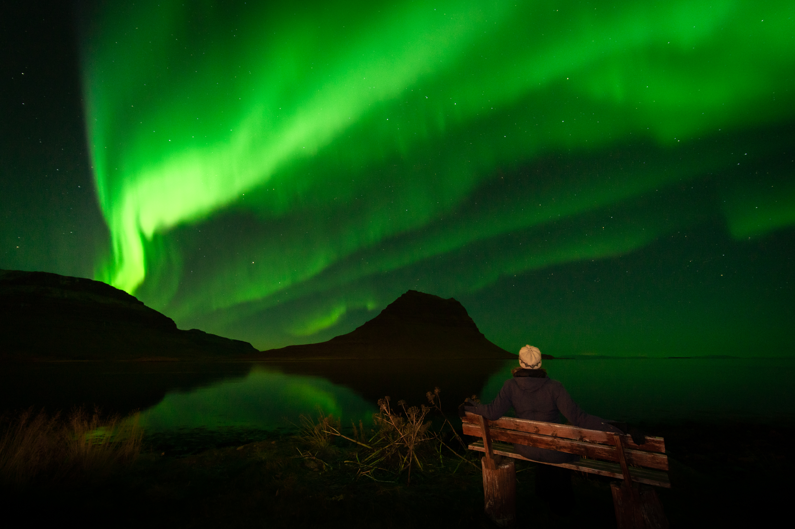
3840 × 2560 · 6.89 MB
Known regression scene. Commons names Oliver Degener as photographer and Chr Grundo as author/uploader; the
existing attribution gap remains unresolved. No new rights verification is claimed. 3840px rendition, not camera
original.
Oliver Degener; uploaded by Chr Grundo ·
CC BY-SA 4.0 ·
Source
S17-02 · aurora
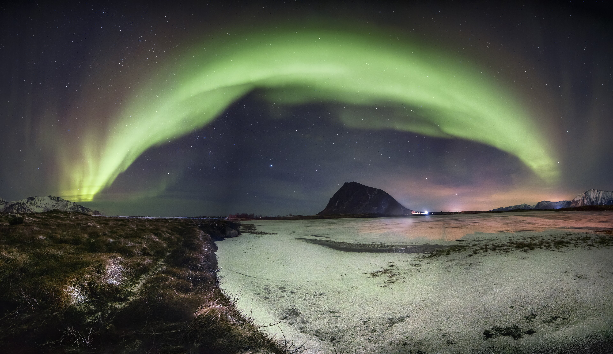
3840 × 2221 · 1.72 MB
Previously used; resized stitched panorama. Snow and green aurora; already processed.
Anthony's astro · CC BY 4.0 ·
Source
S17-03 · aurora
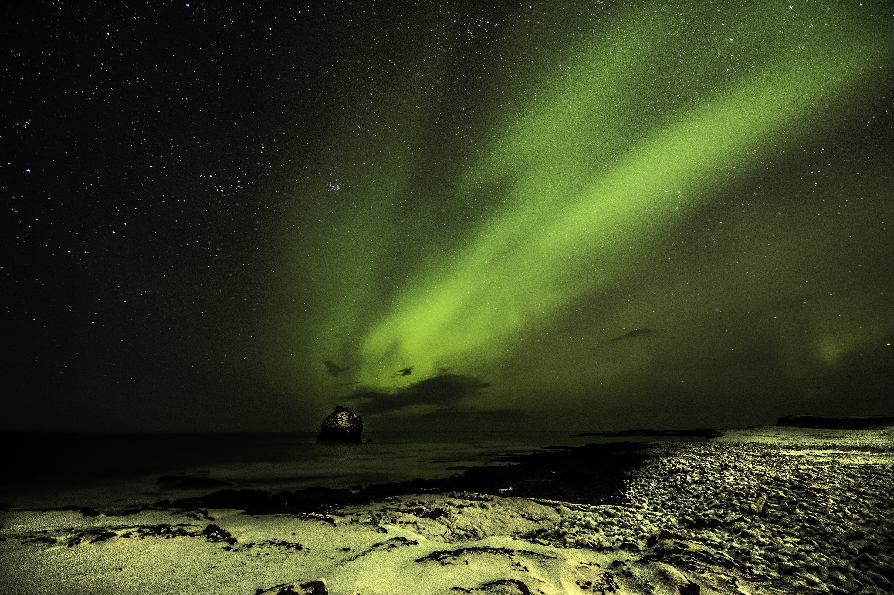
3840 × 2560 · 2.95 MB
Previously used; resized original. Green aurora with tinted snow and dark lava.
Sean O Riordan · CC0 ·
Source
S17-04 · phone
4032 × 3024 · 2.70 MB
Full-size published iPhone JPEG; about 2x digital zoom in source metadata. Bright facade, black fence, dark
vegetation.
56BeachyL · CC BY-SA 4.0 ·
Source
S17-07 · people
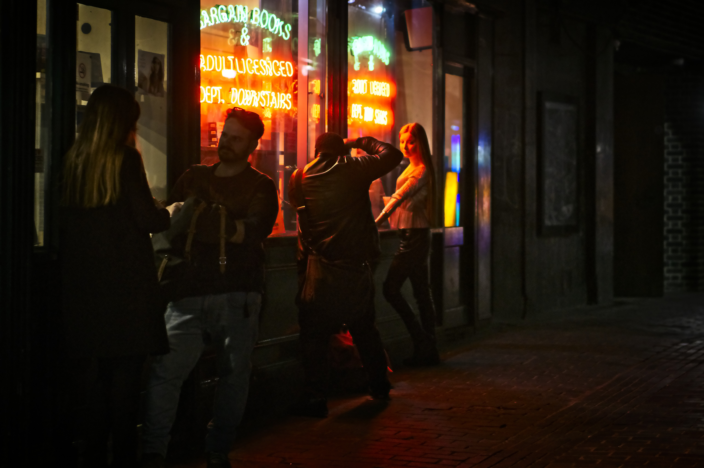
5145 × 3431 · 2.63 MB
Dark faces outside a bookshop, neon and deep shadows. Edited Sony A6000 image according to source keywords;
camera model absent from local EXIF.
Garry Knight · CC BY 2.0 ·
Source
S17-21 · landscape
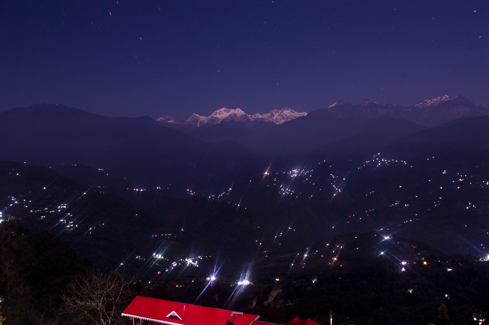
6016 × 4000 · 17.26 MB
Dark Himalayan ridges, snow and village point lights. Edited long exposure (151s), source date and EXIF date
disagree; use as appearance-preservation case, not ordinary phone capture.
Sudipto2cool · CC BY 4.0 ·
Source
S17-05 · phone
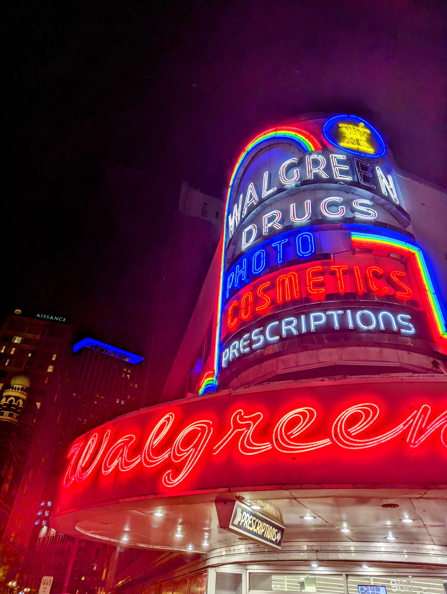
3072 × 4080 · 2.10 MB
Full-size published Pixel JPEG, HDR+ already applied. Saturated neon and lettering; existing intense highlights
must not be mistaken for newly introduced clipping.
edenpictures (Eden, Janine and Jim) · CC BY 2.0 ·
Source
S17-06 · phone
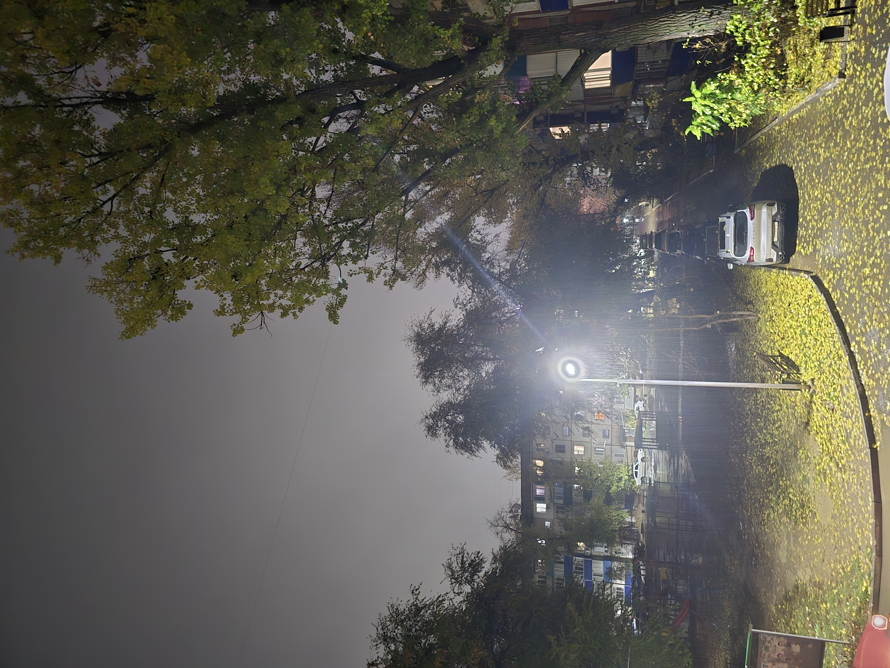
4284 × 5712 · 4.17 MB
Full-size published Galaxy JPEG; uploader names Expert RAW, but this is JPEG, not RAW. EXIF orientation 6.
Already bright processed rain/streetlamp/foliage scene; no-harm case.
Justauser13 · CC BY 4.0 ·
Source
S17-08 · people
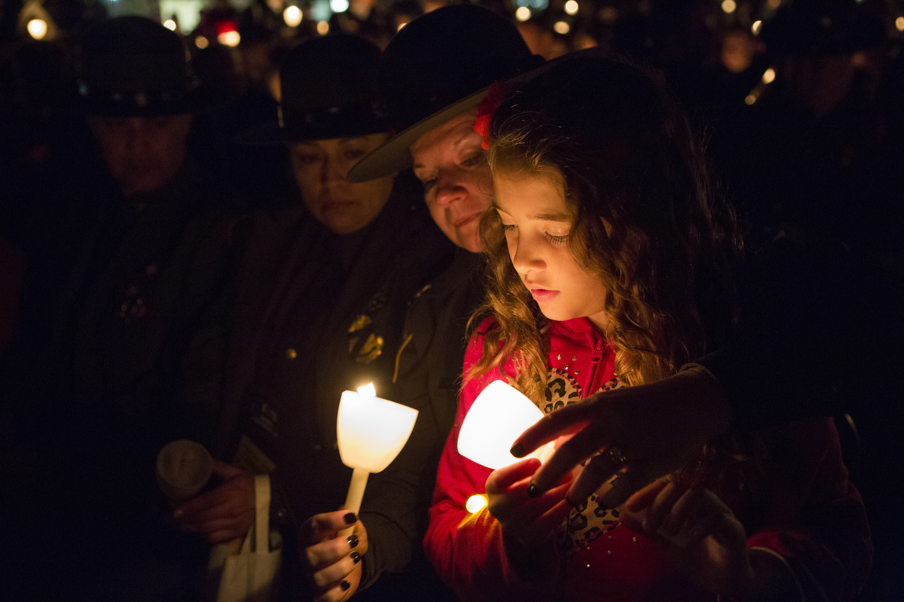
5760 × 3840 · 8.32 MB
Candle-lit child and adult, noisy shadows, skin and hair; Canon ISO 6400, Photoshop in metadata. US federal-work
public-domain basis is stated on source page.
James Tourtellotte / U.S. Customs and Border Protection ·
Public domain (US federal work) ·
Source
S17-09 · mixed-light
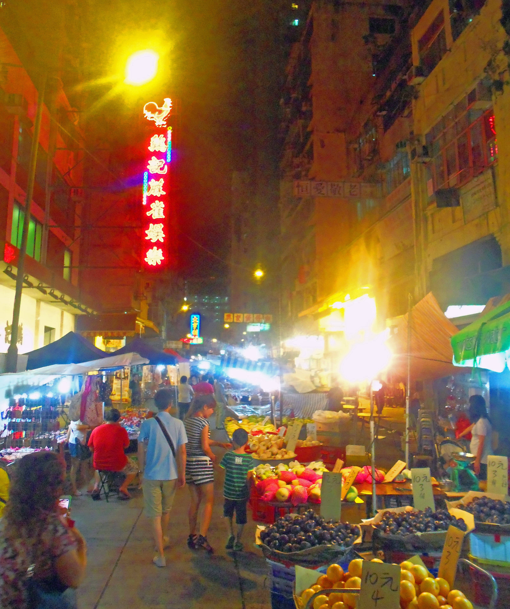
3216 × 3839 · 2.52 MB
Temple Street market, people, coloured lamps and visibly noisy sky. Compact camera; existing bloom and clipping.
Daniel Case · CC BY-SA 3.0 ·
Source
S17-10 · mixed-light
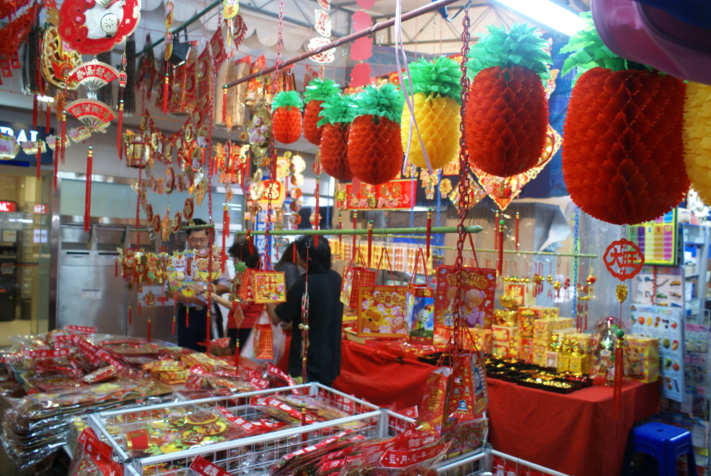
3872 × 2592 · 4.06 MB
Brightly lit stall surrounded by night; colours and small ornament textures. No-harm case, not a severely
underexposed frame.
alex.ch · CC BY 2.0 ·
Source
S17-11 · people
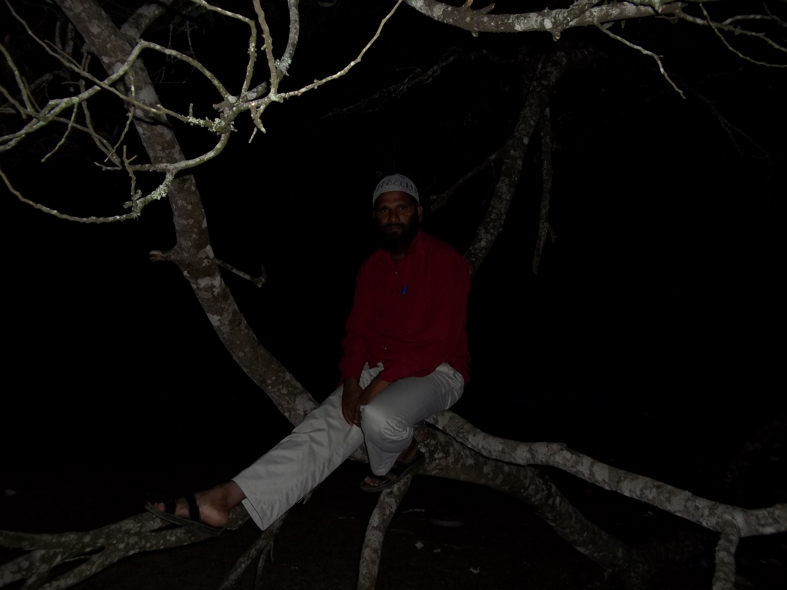
4288 × 3216 · 1.31 MB
Visual inspection corrects the title: person on a tree against black background, not a landscape. Flash fired
per EXIF; weakly lit face and textured branches.
Azad · CC BY-SA 3.0 ·
Source
S17-12 · landscape
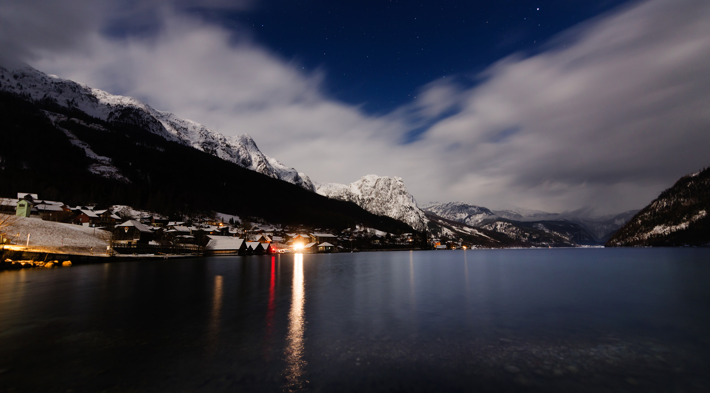
2048 × 1136 · 0.39 MB
Night lake, mountain silhouettes, snow and village reflections. Reduced 2048px web original. Commons explicitly
invalidates copyright-holder EXIF via VRT ticket 2019021610002429; photographer is Ioan Sendroiu. Do not treat
EXIF as reliable provenance.
Ioan Sendroiu · CC0 ·
Source
S17-17 · point-light
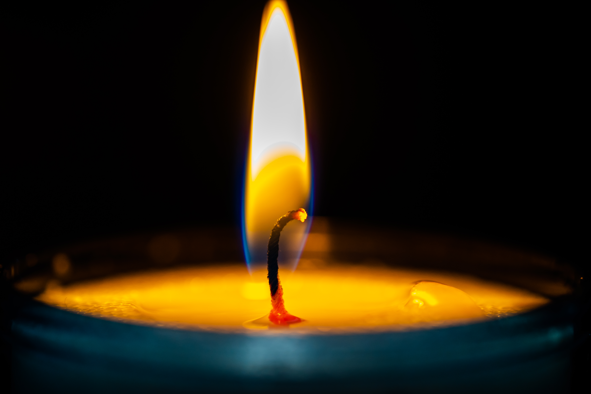
6000 × 4000 · 6.19 MB
Candle flame, wax and black surroundings. Existing clipped flame is intentional; assess wax/colour and avoiding
excessive shadow lift.
Christopher Henry · CC BY 2.0 ·
Source
S17-18 · interior
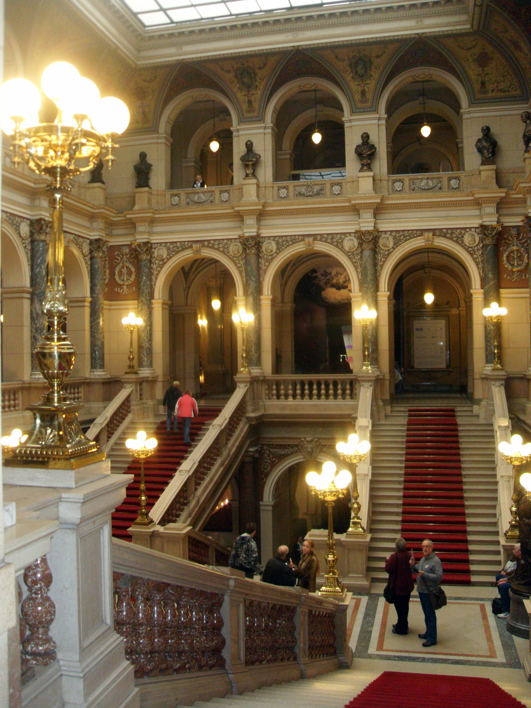
2736 × 3648 · 4.93 MB
Warm-lit staircase with people, lamps and architectural texture. Relatively bright no-harm case. Flickr original
SHA-1 matches Commons page: 88cd07d45bf04e838e899f49f5117450d12e57ee.
Mohamed Yahya · CC BY-SA 2.0 ·
Source
S17-19 · people
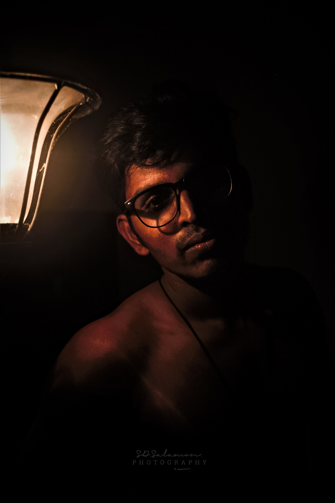
1200 × 1800 · 0.54 MB
Dim close portrait, glasses, skin and deep shadows. Authored/staged processed image, small watermark near
bottom. Diagnostic ROI excludes bottom 10%; upload remains unchanged.
Devid Salamon · CC BY-SA 4.0 ·
Source
S17-20 · people
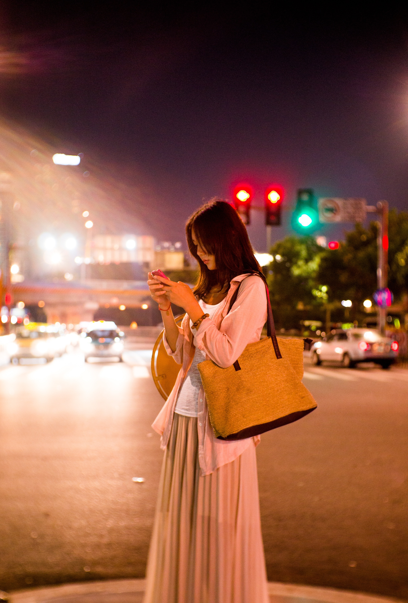
2000 × 2954 · 2.09 MB
Woman with phone under mixed street lighting; hair, skin and bright background. A photograph OF a phone user,
not verified as captured WITH a phone. No camera model in local EXIF.
huweijie07170 · CC0 ·
Source
S17-22 · landscape
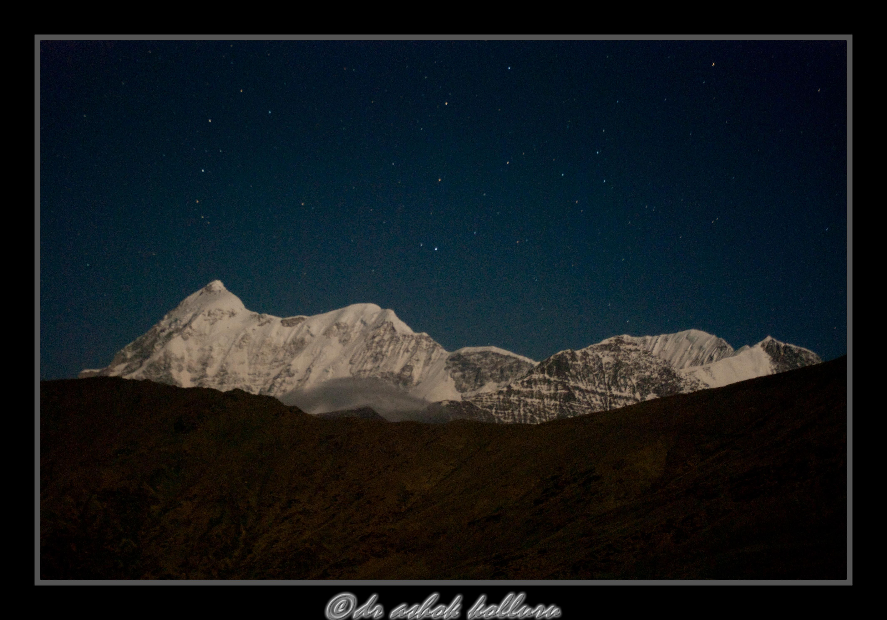
4260 × 2980 · 1.08 MB
Moonlit mountain and dark foreground. Edited/framed image with embedded signature. Original Flickr bytes
retained; content ROI excludes border/signature from diagnostics. Border remains visible to Auto; do not
generalize its exposure statistics to unframed inputs.
dr ashok kolluru · CC0 ·
Source